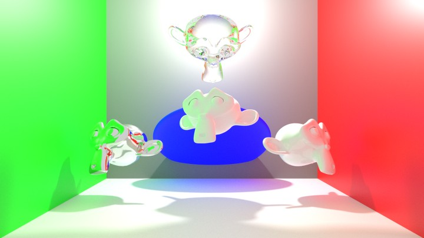
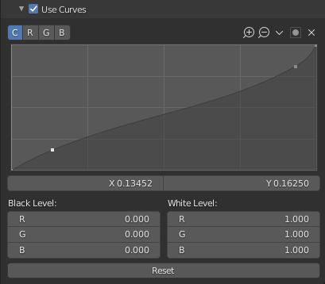
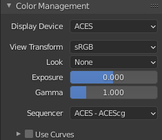

II.K - Gestion des couleurs : BlenderColor management: Blender¶
Blender use natively OpenColorIO* (cf. I.N - OpenColorIO et ACES) for color management, and the parameters are very simple to set up.
An excellent default OCIO configuration comes with Blender, which includes spaces for importing image and video files, exporting in several formats, and a Filmic workspace that works very well for 3D rendering.
However, we can easily use a configuration with ACES if we want to take advantage of it or integrate Blender to a production pipeline in ACES, the ACES workspace being slightly different from Filmic.
K.1 - Default configuration: Filmic¶

a. Render without color management, with sRGB standard. workspace
b. Color managed render in the Filmic. workspace.
With the default configuration and the Filmic space for rendering (scene referred), here are the few color settings in Blender.
K.1.a - Rendering (scene referred) and display¶
These settings are located in the rendering settings, section Color Management.
Note
- With OpenEXR output, only the raw (linear) data is saved.
- For other formats***, the settings are applied during the conversion to the color space of the output format.
It is important to note that in a color managed workflow, and using the OpenEXR* format as an intermediate format (and therefore for saving at the output of Blender), all these options only influence the display of the rendering in Blender but not the data saved in the OpenEXR file ! So you have to re-apply the same settings in the following applications of the chain (compositing applications like Nuke, After Effects, etc. for example).
If the other applications do not use OpenColorIO* (and we cannot therefore give the OCIO configuration of Blender), we can however find these settings via LUT* exported from the OCIO configuration of Blender. Cf. I.2 - Manufacturing chain OCIO.
However, this is not the case when images are saved in other formats (PNG, video, etc.), in which case Blender applies all the settings to the image which, unlike OpenEXR, is saved in a specific color space (sRGB for images, Rec.709 for videos, etc.).
- Display Device : choose the display space. In general, leave on sRGB.
- View Transform : this is the workspace setting (scene referred) that transforms the raw linear data from the renderer to the display.
- Filmic (fig. a) : This is the default space, very efficient to soften the highlights that burn easily and keep details in the dark areas. It actually simulates the printing of images on film and allows a fairly fine and detailed rendering.
- Standard (fig. b) : Displays the data in the display space; this option allows you to see how an application would display the image without applying the Filmic space. It is of little use, as highlights become burned too easily, except possibly when using the curve tools below.
- Filmic Log : a logarithmic version of Filmic, mainly intended to perform important color adjustments in compositing.
- Raw : displays the raw data without transformation, as they are recorded in OpenEXR files if this is the format chosen for output.
- False Color: a contrasted display in various colors to be able to analyze the image content in detail.
- Look : applies in addition to the workspace (View Transform) an additional adjustment according to a purely artistic and creative choice.
Each of the options is a choice of image contrast. Medium and None* are exactly the same options. - Exposure et Gamma : change the exposure and apply a possible gamma* correction to the image.
It is better not to change these settings if the workflow involves other applications after the Blender output and the OpenEXR format is used. They can however be useful to simply retouch the contrast of the output image, if you export in a final image or video format other than EXR. Since these settings affect the workspace, they are applied after the compositing nodes. - Sequencer : settings of the sequencer workspace (the video editing module).
Does not influence 3D images or compositing.
Blender also offers an image adjustment tool via curves, which allows fine retouching of the image.

This example pretty much replicates what the Filmic space does.
If this tool can be useful to correct images coming out of Blender, it is not recommended if you work on a color-managed pipeline using the OpenEXR format: it would be too complicated to reproduce exactly the same effect of curves in the applications that follow Blender in the production pipeline.
K.1.b - Output¶
Blender does not display color options (except for some modes and depth) for image output; it uses the standard space of the output format (sRGB for image formats, linear raw data in OpenEXR)
In OpenEXR the two depths* are :
- Float (Half) : 16 bpc float.
- Float (Full) : 32 bpc float.
Depending on the compositing to be done in the following applications or the final formats, we may prefer Float (Full) keeping in mind that the files will sometimes be much larger and heavier in calculations.
Cf. chapter I.K - Pixels formats for more information.
Things to remember:
- In OpenEXR (and OpenEXR MultiLayer): the raw and linear data are saved.
It will be necessary to re-apply the same settings as those chosen in the rendering parameters and color management when using the files in other applications to find the same image. This is the format that allows the best control and quality. - In the other image and video formats, it is the data converted via the workspace to the standard space of the file that is saved (sRGB or Rec.709 in general). The images displayed as they are will therefore automatically be the same as in Blender (but you lose quality with the loss of linearity in particular, and of color depth).
K.1.c - Input (textures)¶
When adding images to Blender, the Color Space selector allows you to specify the color space used by the file in question.
- Filmic Log : to be used (only) in case the file is an OpenEXR file previously exported or rendered by Blender with the Filmic Log workspace.
- Linear : for standard OpenEXR files (or other possible RGB linear formats).
- Linear ACES : for OpenEXR files rendered with the ACEScg workspace.
- Non-Color et Raw : the file does not contain an image but data (like a normal map, a displacement map, a metalness, etc.)
- sRGB : for all standard image and video files.
- XYZ : in case of a production pipeline in the XYZ space.
Note
The presence of the Linear ACES space allows you to import images that have used ACES, but Blender does not fully integrate into a production pipeline that uses ACES by default; indeed, it does not offer a ACES workspace.
See. I.3 - Using ACES
K.2 - OCIO pipeline¶
Cf. II.D - Design a production pipeline with OpenColorIO..
The OCIO* configuration provided by default with Blender, Filmic, is available in the Blender configuration folder, datafiles/colormanagement/config.ocio.
It is therefore possible to use this configuration throughout the production pipeline by pointing to this configuration in other applications, or by setting the OCIO environment variable to this file.
To include applications not using OpenColorIO in the pipeline (like Adobe After Effects or Adobe Photoshop), it’s always possible to generate the necessary LUT*, especially the LUT that converts linear images (like in openEXR*) to sRGB or other common spaces. We offer several of these LUT for download here, in different formats. You just have to apply the desired LUT to find the Filmic space of Blender in another application.
K.2.a - Changing the OCIO configuration¶
To use a configuration different from the default Filmic, Blender does not allow to select a configuration via the interface, but two solutions are possible.
-
Using the environment variable It’s possible to simply change the
OCIOsystem environment variable to point to the path of the configuration to be used.
See II.D - Designing a production line with OpenColorIO. -
By replacing the file in the Blender folder
You can also delete the existing configuration in the Blender folder and copy the new configuration (theocio.configfile and its associated subfolders). Just remember to keep a copy of the original configuration!
It is of course also possible to edit the ocio.config file of Blender yourself, for advanced users.
K.3 - Using ACES¶
It may be interesting to use the ACEScg workspace rather than the default Filmic of Blender for a slightly different look, or to integrate Blender into a production line using ACES.
Here is a comparison of the results of the same rendering in different spaces:
a. Render without color management, with the sRGB workspace standard.
b. Render with color management, in the workspace Filmic ( “Medium-Contrast” setting).

c. Render with color management, in the workspace ACEScg.
As you can see on these images, ACES keeps the saturation of very bright colors better, and a little more contrast, while Filmic tends to dull the images a little.
To use ACES* with Blender and take advantage of its powerful workspace, simply use the corresponding OCIO* configuration.
However, the configuration provided by OCIO for ACES includes a long list of color spaces corresponding to various camera models, which is very useful in cinema for working on filmed images, but which complicates the task in animation and especially in Blender.
 The list of color spaces displayed in Blender with the original ACES configuration!
The list of color spaces displayed in Blender with the original ACES configuration!
We offer for download here a modified version of ACES specifically for animation, notably by limiting the number of color spaces included to those that are potentially really necessary in animation. This work done from Sony Pictures ImageWorks sources is available here on Github.
 The list of color spaces displayed in Blender with the configuration ACES adjusted by us.
The list of color spaces displayed in Blender with the configuration ACES adjusted by us.
Here are the new settings available once this configuration is installed.
K.3.a - Rendering (scene referred)¶

Here are the settings for the rendering parameters, color management, once ACES* is available.
- The Display Device now contains only one option, ACES. This is not very standard in the way it works, but ACES is made like that…
- View Transform contains the display spaces, to which the ACEScg workspace is applied.
- There is no creative Look provided with ACES. The Looks of Filmic are not very useful anyway (they can easily be reproduced in compositing).
Simply choose the display space corresponding to your screen (usually sRGB).
- Raw displays the raw data without transformation, as they are saved in the OpenEXR files if this is the format chosen for output.
- Log is the ACES equivalent of Filmic Log, useful in case of strong color adjustement in compositing.
- Several spaces offer a variation of the white point* D60 instead of D65. Indeed, D60 (about 6000 K) is the white point of ACES and choosing one of these options allows to see the image without the white point* conversion.
K.3.b - Input (textures)¶
For the import of images, a large list of different color spaces is available. Here are the most useful and common ones.
- The ACES spaces are the usual ACES spaces:
- ACES2065-1: color space for storage recommended by the ACES standard in OpenEXR files, but still quite little used.
- ACEScc and ACES - ACEScct : ACES color space dedicated to color correction, in OpenEXR files in general. It is unlikely that you will have to import this kind of file into Blender, except possibly an OpenEXR file from a color grading or compositing software.
- ACEScg : ACES workspace for rendering and compositing. In a pipeline using ACES, textures can be made in this space and imported into Blender via OpenEXR files.
- Input - Generic - sRGB - Texture et Utility - sRGB - Texture are identical. For standard sRGB image files (PNG, TGA, etc).
- The Output spaces should not be used as input…
- The Role spaces are aliases for other spaces depending on their usage, and are not very useful here.
- The Utility spaces contain several important elements for importing images into Blender:
- Curve converts only the transfer curve of the imported files, but not the primaries.
- Linear convert only the primaries but not the transfer curve. Some are common and useful:
- Linear - sRGB is the default space for OpenEXR files.
- Linear - Rec.709 is perfectly identical to Linear - sRGB.
- Raw is the space to be used for files that do not contain images but other data (like normal map, displacement map, metalness, etc.)
- Rec.709 - Display is the space for standard HD videos (e.g. MP4)
- Rec.2020 - Display is a UHD (4K) video space
In a nutshell :
- OpenEXR files containing images: ACES - ACEScg if the file comes from an application working in ACES, Utility - Linear - sRGB in other cases.
- OpenEXR files containing data other than color: Utility - Raw.
- Image files (PNG, JPG, TGA*, etc.): Utility - sRGB - Texture**.
- Video files (MP4*): Utility - Rec.709 - Texture in most cases, Utility - Rec.2020 - Display** in case of UHD video.
Sources et références